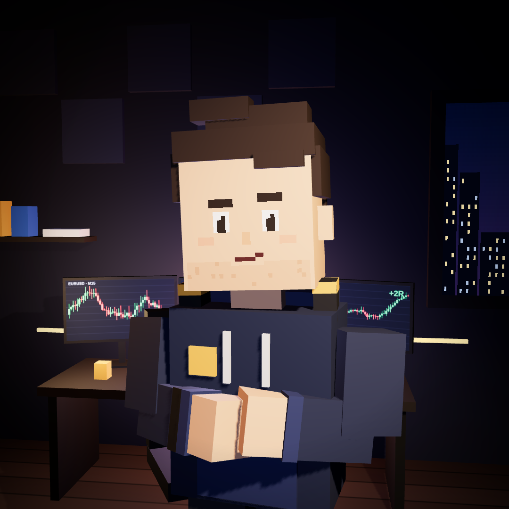

Il motivo per cui il prezzo "va a toccare" certi livelli e poi torna indietro.

Mette lo stop sotto. Se viene preso, parte un ordine di vendita.
Mette lo stop sopra. Se viene preso, parte un ordine di acquisto.
Massimi e minimi evidenti, doppi massimi "perfetti", numeri tondi, il range della notte asiatica.
Chi deve comprare tantissimo ha bisogno di qualcuno che venda tantissimo, tutto insieme.
Dove lo trova? Negli stop dei long, sotto i minimi. Quando scattano, sono vendite a mercato: proprio quello che serve a chi vuole comprare.
Il prezzo scende sotto il minimo, attiva gli stop, e appena la liquidità è presa risale. Chi era stato buttato fuori guarda il prezzo andare dove pensava.
✗ Mettere lo stop esattamente sul minimo che vedono tutti.
✗ Entrare sulla rottura appena il livello viene bucato.
✓ Aspettare di vedere cosa fa il prezzo dopo: rientra o chiude oltre?
Prima di ogni trade mi chiedo una cosa sola: dov'è la liquidità, e qualcuno è già andato a prenderla?
Il resto è conferma.
La struttura del mercato spiegata in 7 slide. Senza indicatori.
Trend rialzista = massimi crescenti (HH) e minimi crescenti (HL). Al ribasso è l'esatto contrario.
Il prezzo supera il massimo precedente nella direzione del trend. La struttura è confermata: i compratori comandano ancora.
In un trend rialzista il prezzo rompe l'ultimo minimo crescente. Non è ancora un trend ribassista: è il primo avviso.
Conta dove chiude la candela, non dove arriva lo stoppino. Una rottura senza chiusura spesso è solo una presa di liquidità.
Rumore. Ne vedi decine al giorno.
Ha un peso vero sulla giornata.
Prima decidi la struttura sul timeframe alto, poi cerchi l'ingresso su quello basso. Mai il contrario.
Due parole che mettono ordine nel grafico. Nel prossimo report vedi come le uso nei miei trade, vinti e persi.
Nessuno dei tre dipende dalla strategia.
Sulle pagine dei CFD sono obbligati a dichiararlo: la maggior parte dei conti retail perde soldi.
Non perché il mercato sia truccato. Ma per tre errori, quasi sempre gli stessi.
Cinque stop di fila capitano a tutti. Ecco cosa restano:
Dal −41% devi fare +69% per tornare in pari.
"Tanto adesso torna." A volte torna. Quando non torna, una perdita piccola diventa enorme.
Lo stop si decide prima di entrare, a mente fredda. Dopo, si lascia lì.
Sei davanti al grafico da un'ora, il setup non arriva, e "almeno un trade lo faccio".
Anche non entrare è una decisione. Nel mio diario i giorni senza setup contano come gli altri.
Per questo qui pubblico tutto: i trade vinti, quelli persi e i giorni in cui non entro.
Segui il conto e vediamo se la disciplina regge.